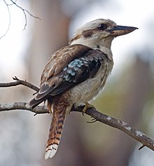
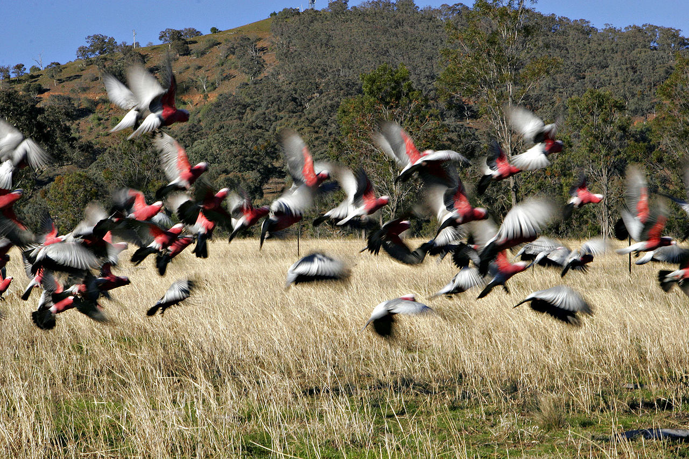
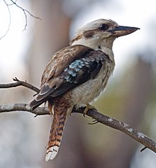
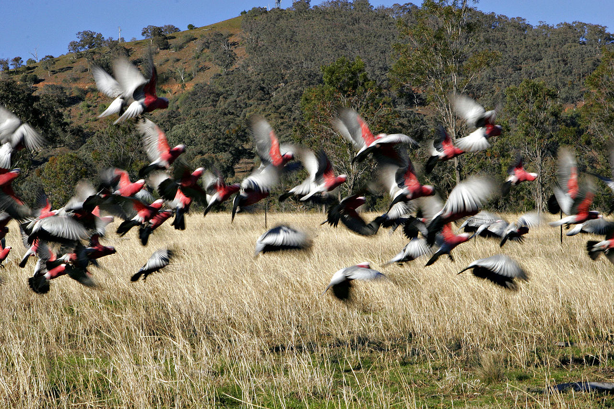

Birds
Australia and its offshore islands and territories have 898 recorded bird species as of 2014. Of the recorded birds, 165 are considered vagrant or accidental visitors, of the remainder over 45% are classified as Australian endemics: found nowhere else on earth. It has been suggested that up to 10% of Australian bird species may go extinct by the year 2100 as a result of climate change.
Australian species range from the tiny 8 cm weebill to the huge, flightless emu. Many species of Australian birds will immediately seem familiar to visitors from the Northern Hemisphere - Australian wrens look and act much like northern wrens and Australian robins seem to be close relatives of the northern robins, but in fact the majority of Australian passerines are descended from the ancestors of the crow family, and the close resemblance is misleading: the cause is not genetic relatedness but convergent evolution.
For example, almost any land habitat offers a nice home for a small bird that specialises in finding small insects: the form best fitted to that task is one with long legs for agility and obstacle clearance, moderately-sized wings optimised for quick, short flights, and a large, upright tail for rapid changes of direction. In consequence, the unrelated birds that fill that role in the Americas and in Australia look and act as though they are close relatives.
 


